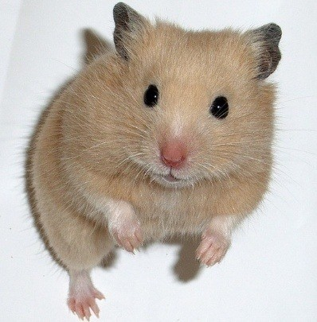

인덱스 페이지로
햄스터를 키워보자!
21961019 김예원
햄스터란?
설치목 쥐과에 속하는 포유류. 주로 골든햄스터(일명 시리안햄스터)와 차이니즈햄스터를 의학연구에 사용하고 있다. 유로비안햄스터도 있지만 거의 사용하지 않는다.
골든햄스터는 시리안햄스터에서 포획한 암컷 2마리와 수컷 1마리에 유래한다. 골든햄스터의 성체중량은 130~140g인 데 비하여 차이니즈햄스터는 30~40g과 생쥐급의 크기이다.
골든 햄스터

드워프 햄스터
- 푸딩

- 정글리안
- 펄
- 로보로스키
필요한 용품
사육장 용품
사육장(리빙박스)
골든 햄스터
120L이상
드워프 햄스터
68L이상
쳇바퀴
골든 햄스터
지름 22cm이상
드워프 햄스터
지름 17cm이상
베딩
먼지가 없는것, 피톤치드 성분이 적은 것
추천 : jrs
급여 용품
사료
마트 사료가 아닌것, 해바라기 씨가 적은것, 유전자 조합 식품이 없는것
추천 : 크리스피 뮤즐리
주의사항
- 1햄 1케이지를 지키자
자연에서도 혼자사는 햄스터. 독립적인 친구들이기 때문에 합사가 불가하다.
- 번식성이 높다
임신기간 18~20일, 6마리 이상 낳기 때문에 번식성이 높다.
- 카니발리즘::동족포식
- 출산 직후 수컷과 암컷을 분리하지 않으면 수컷이 암컷을 다시 차지하기 위해 수컷이 햄스터들을 공격
- 본능적으로 출산 직후 떨어진 영양을 보충하기 위해 암컷이 새끼들을 공격
- 외부로부터 온 스트래스로 인해 위협을 받아 암컷이 다음 세대를 낳기 위해 공격